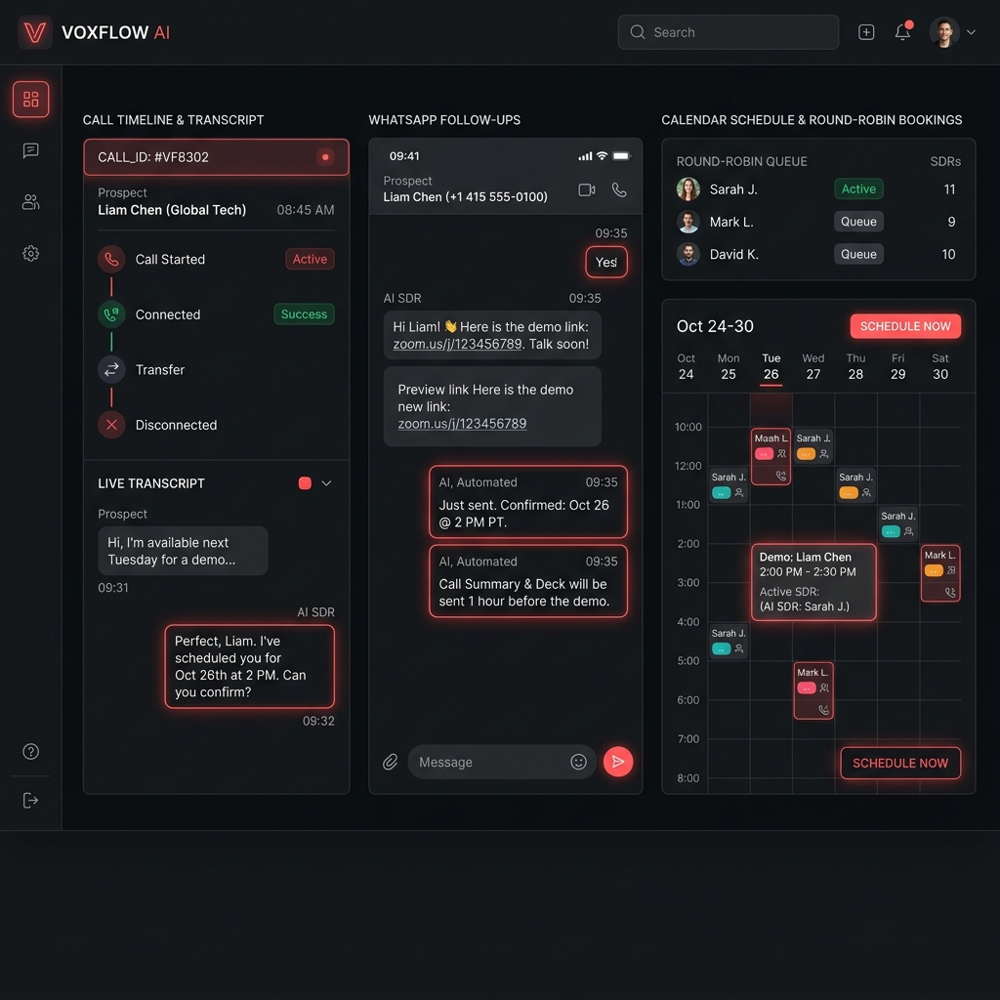
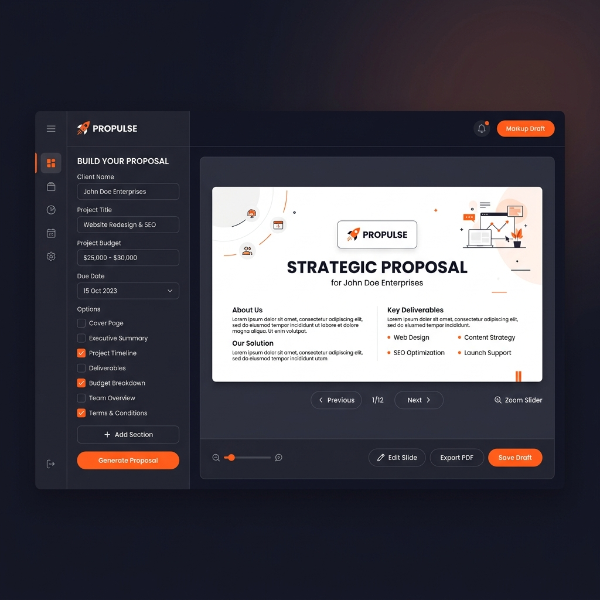

Escrevo código para resolver o problema mais caro de qualquer empresa: a fricção do trabalho manual.
Passei dez anos lidando com tráfego e vendas no marketing digital. Se há algo que aprendi nesse tempo, é que de nada adianta ter uma ótima ideia se a execução trava porque alguém precisa copiar dados de um sistema e colar em outro trinta vezes por dia.
Comecei a programar para resolver meus próprios gargalos de tempo. Hoje, crio sistemas e automações sob medida. O objetivo é simples: liberar o cérebro das pessoas para o trabalho que realmente gera receita, deixando a rotina chata para as máquinas rodarem sozinhas.
Habilidades e Ferramentas
Desenvolvimento & Dados
PythonSQL / SupabaseGA4 & GTM
Automação & APIs
n8nAPIs & WebhooksMake
Inteligência Artificial
Agentes de IAPrompt EngineeringPlaywright
Quer automatizar sua operação?
Pare de desperdiçar horas com tarefas repetitivas. Me chama.
Uma redação inteira de YouTube (pesquisa, roteiro, voz sintética, visual e montagem) rodando sem intervenção humana, retroalimentada por análise de comentários.
PythonPlaywrightFFmpegGemini API
Estudos de Caso • Rodrigo
Outros estudos de caso
Redação Automática
Python
Uma esteira completa de YouTube rodando sem cliques.
TTS Factory
PySide6
Desktop app para processar áudio em lote sem sussurros.

Agente de Voz
Vapi.ai
Ligação e qualificação automática de leads em 2 minutos.

Gerador de Propostas
Figma API
Automação de PDFs comerciais sob medida para vendas.
Uma redação de YouTube rodando com zero pessoas (e o que eu aprendi fazendo essa loucura)
Estudo de Caso • Automação de Conteúdo • 6 min de leitura
Se você já tentou manter um canal ativo no YouTube, sabe que o processo é um moedor de carne. Antes do vídeo ir pro ar, tem que acontecer um monte de coisa chata ao mesmo tempo. Você precisa minerar o tema, escrever um roteiro que preste, gravar a narração, caçar ou gerar imagens que façam sentido, jogar tudo numa timeline, rezar pro editor não travar e, depois de tudo, ainda ler os comentários pra ver se alguém xingou sua mãe.
Geralmente, isso é trabalho para uma redação de cinco ou seis pessoas. Só que eu fazia tudo isso sozinho, três vezes por semana, no grito.
Obviamente, minha cabeça pifou. Eu estava quase pirando, sem grana para contratar uma equipe e cansado de passar madrugadas arrastando faixa de áudio em timeline de editor. Então fiz o que qualquer programador teimoso faria: comecei a escrever scripts em Python para automatizar minhas próprias tarefas. O resultado foi um monstro que hoje roda sozinho enquanto eu cuido da minha vida.
1. Limpando a matéria-prima (Chega de copiar e colar)
A primeira parte chata era a pesquisa. Passar horas copiando transcrições de vídeos de referência, limpando formatação quebrada e organizando tudo no Bloco de Notas é um trabalho burro.
Montei um script simples. Agora, eu só jogo uma lista de links lá dentro. O sistema puxa o áudio, extrai a transcrição de tudo de uma vez, limpa o lixo e me entrega a matéria-prima mastigada. Aquela tarde inteira que eu perdia fazendo trabalho de estagiário virou um processo de 30 segundos em background.
2. O Creative Writer e a técnica do "Bathetic Drop"
Roteiro escrito por IA pura é insuportável. Você abre o ChatGPT, pede um roteiro e ele te cospe aquele texto engessado que parece panfleto de imobiliária ou post chato de LinkedIn corporativo. "Em um mundo cada vez mais digital..." — convenhamos, ninguém aguenta isso. O espectador fecha o vídeo nos primeiros 5 segundos.
Para contornar isso, criei um agente em Python (o Creative Writer) rodando com a API do Gemini, mas enchi o bicho de regras de copywriting humano:
Bathetic Drop: É um truque narrativo onde o roteiro constrói um clima super dramático e sério para, de repente, dar uma rasteira no espectador com uma quebra irônica ou uma piada meio cínica. Mantém o cérebro da pessoa acordado.
Frases Curtas (Audio-First): Roteiro de vídeo é feito para ser ouvido, não lido. O agente escreve com pausas pensadas para a respiração da voz sintética, sem palavras difíceis ou construções simétricas perfeitas.
3. A batalha contra o "bug do sussurro" no áudio
A narração foi o meu maior quebra-cabeça. Eu queria usar as vozes ultra-realistas do Gemini, mas caí em duas armadilhas: o plano gratuito bloqueia você se mandar o roteiro de uma vez (Rate Limit) e, de vez em quando, a IA simplesmente cismava em sussurrar o roteiro, parecendo um psicopata de filme de terror gótico.
Pra domar esse comportamento, criei um programinha desktop em PySide6 e SQLite chamado TTS Factory.
Chunking Semântico: Fatia o roteiro em pedaços pequenos de 400 palavras para não engasgar.
Delay Cirúrgico: Enfia um delay de 35 segundos entre cada pedaço. É o tempo exato para o plano gratuito respirar e não me dar um bloqueio na testa.
Prompt Anti-Sussurro: Injeta uma instrução de sistema em inglês (“Read aloud in a cynical and friendly manner. Do not whisper.”), usando a voz Sadaltager e temperatura em 1.4 para simular as oscilações naturais da fala.
4. Playwright para automatizar o que "não dava" para automatizar
Configurar a voz da IA manualmente todo santo dia é um porre. Entrar no site, fazer login no Google, selecionar a voz Sadaltager, desligar o recurso "Thinking" (para não pagar por processamento à toa) e ligar o tom "Affective" toma um tempo precioso.
Para matar essa etapa, escrevi o Narrator Bot usando Playwright. É um robô que roda silenciosamente em background. Ele usa um perfil de navegador que salvei localmente (pula a autenticação do Google por estar com a sessão persistida), entra no AI Studio, faz os cliques chatos in milissegundos, cola o roteiro gerado pelo Creative Writer, baixa o áudio e fecha a janela.
5. Imagens com a mesma cara e montagem sem abrir o Premiere
Canais de IA costumam parecer uma colcha de retalhos horrorosa. Uma foto realista, depois um desenho 3D, depois um vetor flat. Fica muito amador.
No meu sistema, o agente que escreve o roteiro também cospe os prompts das imagens estruturados em JSON, forçando o mesmo estilo visual (tipo vintage photographic style, grainy 35mm). Todas as imagens bebem da mesma fonte estética. Depois, o FFmpeg roda um script de terminal que pega a narração, o lote de imagens geradas, a trilha sonora e costura tudo matematicamente. O vídeo sai pronto, editado e renderizado.
6. O ciclo de feedback que ninguém constrói
Fazer vídeo pro YouTube e não ouvir a audiência é jogar dinheiro no lixo. Mas convenhamos, passar horas lendo centenas de comentários para extrair dados é um saco. Fechei o ciclo de um jeito inteligente: um script roda de tempos em tempos raspando os comentários dos vídeos novos. Outro script de IA tabula esses textos e tenta entender: onde a galera cansou? O que querem ver no próximo?
Toda segunda-feira de manhã, um relatório simples cai no meu e-mail dizendo o que funcionou e o que deu errado. A esteira aprende com a própria audiência. O próximo roteiro sempre nasce melhor que o anterior.
6 → 0
Pessoas necessárias na redação diária
15s
De setup manual do áudio (era 10 minutos)
R$ 0,00
De custo de narração em 90% dos vídeos
Seu processo repetitivo deveria ser código
Seja para eliminar cliques manuais ou economizar milhares de reais na sua operação, eu crio soluções e esteiras de automação sob medida.
Como automatizei a geração de áudio de alta retenção sem limites de API e sem sussurros
Estudo de Caso • Desktop Automation • 5 min de leitura
Se você já tentou usar voz de IA para produzir vídeos de alta qualidade em escala, conhece bem o drama: as APIs bloqueiam por excesso de requisições, a voz começa a sussurrar do nada, e você perde horas preciosas dividindo textos longos manualmente.
Interface do TTS Factory: design escuro premium feito em PySide6 rodando localmente.
O Gargalo de Produção
A API de Text-to-Speech gratuita do Gemini 2.5 Pro é incrível, mas possui limites estritos de requisições por minuto no tier gratuito. Além disso, se os blocos de texto contiverem quebras confusas ou pontuações estranhas, o modelo tende a começar a narrar em tom de sussurro dramático. Para canais de alta retenção, isso é inaceitável.
A Solução Técnica Desenvolvida
Criei o TTS Factory, um aplicativo desktop robusto e completo construído em Python, PySide6 e SQLite. O sistema resolve esses gargalos implementando as seguintes engenharias:
Chunking Inteligente de 400 Palavras: O app analisa semanticamente o roteiro e o divide em pedaços exatos sem cortar frases ao meio.
Controle de Delay Anti-Rate-Limit: Executa um timer assíncrono de 35 segundos entre o envio de cada bloco, permitindo processar textos gigantescos inteiramente no tier gratuito sem erros.
Impedimento de Sussurros via Prompt: Injeção automatizada de instruções de sistema e metadados específicos para o modelo, gerando um áudio claro, linear e consistente.
SQLite local: Rastreio de histórico de geração, permitindo que você retome exportações falhas do exato ponto em que parou.
"Você insere um roteiro longo de 10.000 palavras, clica em rodar, e o software entrega o arquivo consolidado pronto para edição enquanto você toma um café. O trabalho manual foi reduzido a zero."
Métricas de Impacto
0%
Falhas por limite de requisições
100%
De automação sem cliques manuais
10k+
Palavras processadas por execução
Quer uma automação robusta como esta na sua empresa?
Seja para produção de conteúdo ou otimização de fluxos operacionais, eu construo a ferramenta desktop sob medida que sua equipe precisa.
O dia em que trocamos o telemarketing chato por uma IA que liga para o cliente em 2 minutos (e o inferno do "Alô... Alô?")
Estudo de Caso • Voice AI SDR & Lead Management • 6 min de leitura
Se você vende serviços ou produtos de ticket mais alto, sabe que o tempo é o seu ativo mais escasso.
Se um potencial cliente preenche o formulário do seu site demonstrando interesse e você liga para ele em menos de 5 minutos, a chance de fechar o negócio é alta. Se você demorar uma hora, ele provavelmente já voltou a trabalhar, esqueceu quem você é ou fechou com o concorrente que atendeu primeiro. É a física simples da venda.
O problema é que sua equipe de vendas não pode viver colada no telefone esperando o formulário apitar. Eles estão em reuniões, almoçando ou focados em fechar contratos.
Para resolver essa fricção, desenhamos um sistema que faz o trabalho chato e cansativo de qualificação em minutos, deixando para os humanos apenas a parte de negociar e assinar o contrato.
Visualização integrada do fluxo: transcrições de chamada em tempo real, distribuição na agenda dos vendedores e relatórios automáticos.
A Arquitetura do Sistema
Em vez de criar algo complexo demais para o próprio bem, dividimos a engrenagem em cinco etapas diretas:
O Gatilho: Assim que o formulário do site é enviado, o n8n (que atua como os tubos de conexão dos dados) captura o lead e aciona o motor de telefonia.
A Ligação via Vapi.ai + Groq: A API da Vapi liga para o número do cliente em menos de 2 minutos. Usamos o modelo Llama 3 rodando nos servidores da Groq para garantir que a latência (o tempo que a IA leva para processar a fala e responder) ficasse abaixo de 800 milissegundos. Qualquer atraso maior do que isso faz a ligação parecer aquele delay irritante de chamada internacional de TV, e o cliente desliga na hora.
Qualificação RAG: A IA tem acesso a um banco de dados de conhecimento da agência (RAG). Ela não inventa respostas. Ela explica o serviço de forma simples, ouve as necessidades do lead e avalia se ele atende aos critérios mínimos de orçamento e perfil.
Distribuição Round-Robin (Python): Se o lead é qualificado, o agente avisa o cliente que vai agendar um horário com um especialista. Nosso script em Python bate na API do Google Calendar, analisa a carga de trabalho de cada vendedor e reserva a sala de reunião no calendário do vendedor disponível da vez.
O Relatório de Inteligência: A gravação e a transcrição da chamada são lidas pelo Claude 3.5 Sonnet, que resume a conversa no modelo BANT (Orçamento, Autoridade, Necessidade e Tempo) e envia um relatório formatado direto no WhatsApp do dono da empresa.
"O tempo médio para a primeira ligação após o lead entrar no site caiu para menos de 5 minutos, com latência de conversa abaixo de 800ms."
Os Bastidores e as Cicatrizes do Desenvolvimento
Qualquer um que diga que implementar IA de voz é "só apertar um botão" nunca tentou fazer uma rodar no mundo real. Tivemos que resolver três problemas graves que quase arruinaram o projeto:
1. O bug do "Alô... Alô?"
Nas primeiras versões, a IA interrompia as pessoas constantemente. A detecção de voz (VAD) interpretava qualquer pausa do lead para respirar como se ele tivesse terminado de falar. O resultado era um robô atropelando a fala do cliente, parecendo um vendedor de telemarketing desesperado. Tivemos que aumentar o tempo de silêncio tolerado e programar a IA para injetar marcadores de escuta natural (como "Aham", "Entendi", e "Perfeito, continue"), dando ritmo e humanidade à conversa.
2. O inferno dos Fusos Horários
No mundo da programação, tudo roda no fuso UTC (Horário de Greenwich). Quando o script agendava uma reunião para as 14h de Brasília, ela era registrada no calendário do vendedor como 17h. Vendedores perdiam reuniões e clientes ficavam esperando em salas virtuais vazias. A correção exigiu mapear rigorosamente a conversão de fuso horário em todas as pontas do Python para forçar o padrão America/Sao_Paulo antes de qualquer requisição.
3. O banimento iminente no WhatsApp
Quando o sistema começou a enviar os links das reuniões por mensagens automatizadas no WhatsApp, o algoritmo da Meta começou a bloquear os números da agência. Disparos rápidos com links são o caminho mais curto para ser banido por spam. Tivemos que implementar um fluxo de "aquecimento" de chips, reduzir a frequência de envio e programar o script da Evolution API para incluir variações de tempo randômicas (entre 15 e 45 segundos) entre cada mensagem, simulando um humano real no teclado.
Métricas de Negócio
Sub-5 min
Tempo de resposta inicial de novos leads
< 800ms
Latência de resposta da IA na chamada
Zero
Esforço manual para qualificar e agendar
Seu processo comercial perde leads por demora no atendimento?
Se você tem leads esfriando no seu site ou quer que seu time comercial foque apenas em reuniões qualificadas e prontas, nós podemos desenhar essa automação sob medida.
O dia em que tiramos os designers da linha de produção de propostas (e passamos a fechar negócios mais rápido)
Estudo de Caso • Automação de Processos Comerciais • 5 min de leitura
Imagine o seguinte: o time de vendas é o motorista de um carro de corrida. O cliente em potencial é a linha de chegada. Quando o cliente mostra interesse real, você precisa acelerar e entregar a proposta comercial o mais rápido possível, enquanto a conversa ainda está fresca na cabeça dele.
Mas em uma agência de marketing movimentada, o processo era diferente. Para gerar uma proposta em PDF que fosse visualmente atraente e personalizada, o vendedor dependia do time de design. Toda pequena alteração no escopo ou um ajuste de R$ 500 no valor final significava abrir um chamado interno. O designer precisava interromper a criação de campanhas para ajustar textos no Figma. A proposta demorava dias para ficar pronta, e o lead esfriava.
O painel web integrado à API do Figma: vendedores editam dados e a automação constrói o PDF.
O Problema: Designers atuando como digitadores de luxo
Os designers são profissionais criativos caros. Usá-los para atualizar tabelas de preços e copiar logos de clientes em slides institucionais é um desperdício de talento e dinheiro. Ao mesmo tempo, mandar uma proposta comercial feia, feita em Word, prejudicava a percepção de valor dos serviços da agência. A solução óbvia era automatizar a geração desses documentos.
A Engenharia por Trás do Gerador
Construí um sistema que une um painel de controle simples a uma ponte inteligente com o Figma. A lógica funciona em três etapas claras:
Interface Web de Entrada: Desenvolvi um painel web hospedado na nuvem interna da agência. O vendedor digita os dados do cliente, seleciona as caixas dos serviços contratados (o escopo) e faz o upload do logotipo da empresa interessada.
Lógica de Tratamento de Dados (Python): O script recebe o formulário, calcula os valores corretos e limpa os textos. Ele analisa as proporções da imagem do logo para garantir que ela caiba na área reservada do design sem ficar esticada ou achatada.
Geração Headless via Figma API: A automação injeta as variáveis no Figma usando um plugin customizado, preenche os slides com os dados do vendedor e aciona a exportação direta para PDF de alta resolução. Em 2 minutos, o arquivo está pronto para envio.
"O vendedor consegue alterar o escopo e enviar o PDF de 15 páginas enquanto está na ligação com o cliente. O designer nem fica sabendo que a proposta existiu."
Os Bastidores e as Gambiarras Necessárias
Nenhuma automação sobrevive ao primeiro contato com a realidade sem alguns ajustes. Durante o desenvolvimento, enfrentamos problemas que exigiram soluções práticas:
A briga com os logos dos clientes: Vendedores subiam imagens de todos os formatos possíveis. Se o logo era muito vertical ou quadrado, a API do Figma esticava a imagem como se fosse um chiclete. Tivemos que programar uma regra em Python que identifica a proporção da imagem antes do envio e a acomoda de forma centralizada dentro de uma caixa invisível com tamanho fixo.
Fontes invisíveis: No servidor headless, a API do Figma às vezes falhava em renderizar as fontes customizadas da marca da agência, substituindo-as por Arial e destruindo o layout. A solução foi forçar o carregamento de toda a árvore tipográfica no início do script de injeção de texto.
A ansiedade do comercial: A renderização completa do PDF de alta resolução demorava cerca de 15 segundos. Para evitar que os vendedores clicassem repetidamente em "Gerar" achando que o sistema tinha travado, inserimos uma barra de carregamento e mensagens bem-humoradas na tela.
Resultados Comerciais Reais
2 min
Tempo de geração de proposta (era 45 minutos)
Zero
Chamados de suporte abertos para os designers
100%
De propostas enviadas no padrão visual da marca
Sua equipe comercial perde tempo com tarefas repetitivas?
Se você tem vendedores gastando horas editando documentos ou esperando designers para enviar propostas, nós podemos resolver esse atrito com automações inteligentes e painéis sob medida.